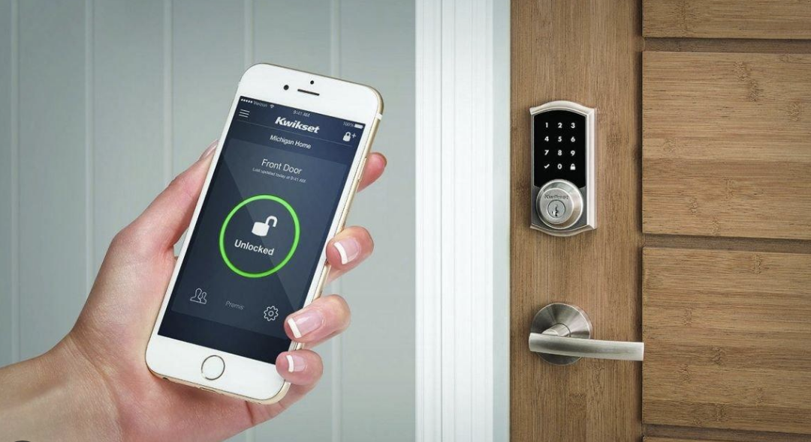

| |
Clase 01: ¿QUÉ SON LAS ODS? En septiembre de 2015, líderes de todo el mundo adoptaron un conjunto de 17 Objetivos de Desarrollo Sostenible (ODS) con la finalidad de proteger nuestro planeta, combatir la pobreza y trabajar para su erradicación. Estos ODS representan un compromiso global para construir un futuro más próspero, equitativo y sostenible para las generaciones venideras, estableciéndose como parte fundamental de la Agenda 2030 para el Desarrollo Sostenible. Actividad del día:
Nos unimos en equipo para abordar y resolver un problema relacionado con el Objetivo de Desarrollo Sostenible número 6: Agua Limpia y Saneamiento. |
 |
CLASE 2: BITÁCORA DIGITAL ¿Qué tipo de bitácoras hay? Estilo Blog y Sitio Web. ¿Qué componentes tiene una bitácora? Los reportes de los avances de cada clase, la documentación y las notas de clase, al final de cada reporte se colocan "obstáculos y conclusiones" |
|  |
CLASE 3: PROTOTIPO DE PROYECTO INDIVUALDejamos volar nuestra imaginación, tomamos lápiz y papel para proponer proyectos innovadores de forma individual, que luego compartimos con toda la clase. Mi proyecto personal consistió en desarrollar una cerradura inteligente que brinda seguridad adicional. Esta cerradura incorpora para una cámara para permitir la vigilancia ocasional de tu hogar o habitación; además de contar con una alarma que se activa si alguien intenta abrir la puerta sin tu consentimiento. |